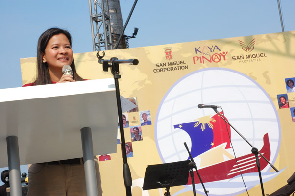
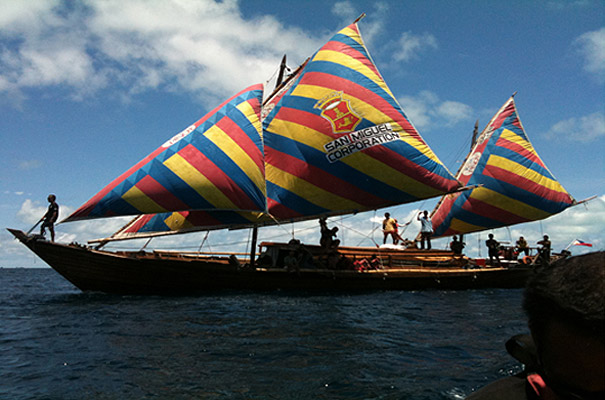

Against the Elements
thousands of kilometers and six countries later, team Balangay sails home to a jubilant philippines They had only the wind at their back and the wisdom of our pre-colonial ancestors to guide them. Thirty nine men aboard the Diwata ng Lahi (Fairy of the Race), Masawa Hong Butuan (Radiance of Butuan) and the Sama Tawi-Tawithree wooden sailboats built using the ancient shipbuilding methods of the Badjaosfor four months braved rough seas, evaded violent storms and alas, even immigration bureaucracy to sail across six countries using only the sun, stars and wind to chart their course.
It was a feat perhaps equaled only by the historic conquering of the summit of Mt. Everest, accomplished by the same elite team headed by former DOTC Undersecretary Arturo Valdez of Kaya ng Pinoy Inc. a few years prior.
This was the Voyage of the Balangay, a proverbial man-against-the-elements tale of courage, skill, wisdom, and ultimately, a leap of faith that the Filipino can beat the odds. Kaya ng Pinoy, indeed.
We have reconnected the present with our glorious, historical past, and we have inspired and stirred national pride in the hearts of Filipinos here and abroad, says Valdez. The story of the Balangay is our story; it is a story of a free and liberatedpeople. Throughout our journey, we were one as a people. The waters were there not to divide us; they were there to unite us. We consider this a voyage of unity.
The team launched the Philippine Balangay Expedition in September 2009 to retrace the pre-Hispanic transportation and trade routes of early Filipinos using reconstructions of the balangayan indigenous watercraft unearthed in Butuan City in 1975. The team received enthusiastic support from Filipinos not only back home but also in countries where it had docked. Our countrymen even came to our rescue several times, when supplies ran low or when storms would drive us off course.
He shares the story of the team almost being unable to pass through a Singaporean port because they were being asked for documents by the immigration department papers which they did not have. Moments later, they heard voices, Filipino voices, on the radio, clamoring for the local officials to give them passage. Later, upon seeing the San Miguel sail, the Pinoy seafarers jokingly asked for San Miguel Beer to be sent over, because they assumed we had a lot of it on board, says Valdez with a chuckle.
The Philippine leg of the expedition was sponsored in part by non-government organization Butuan Global Forum Inc., while the international voyage, which spanned 12,600kms from Butuan City to Brunei, Malaysia, Singapore, Thailand, Indonesia and Cambodia, was supported by San Miguel through its property arm San Miguel Properties.
This is something that all Filipinos can truly be proud of and we are honored to have been part of this undertaking, says Ramon S. Ang, SMC President and Chief Operating Officersupport that Valdez acknowledges wholeheartedly noting that without them, ang Balangay hanggang Pilipinas lang.
This is very much aligned with the new positioning of San Miguel Properties, and our vision of bringing Filipinos to the promised land, says Ang. In pre-colonial
Philippines, it is important to note that the term balangay or balanghai referred not only to the sea vessels, but also to the tight-knit, datu-led communities aboard them.
We see our mission as building communities that are centered on God and people. As part of a 120-year old company that has been part of Filipino history, we feel that it is about time that we give what is due to the people who have made us who we are today. In 2011, the Balangay team hopes to push further into Madagascar and the French Polynesiawith continuing sponsorship from San Miguel Properties.
We championed this initiative in part because we wanted to build brand awareness, says Karen Ramos, Sales and Marketing Manager of San Miguel Properties. To further move away from the conventional real estate wisdom of location, location, location, and continue to drive home our mantra of People, People, People. We dont want people to buy houses off the rack. We want them to find homes that they can pass on from generation to generation.
She continues: Ultimately, our goal is to touch the souls and lives of every Filipino; and through our support of The Voyage of the Balangay, as well as a number of other initiatives such as Monte Maria, we are hoping to achieve just that.